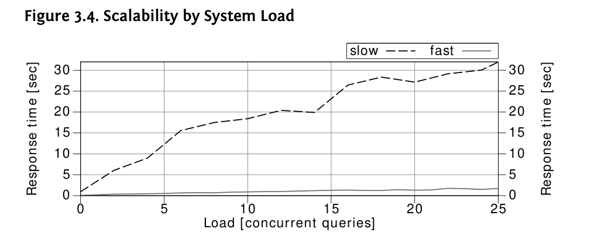

Chương 3: Hiệu suất và Khả năng mở rộng
Dù thông tin điều kiện có vẻ không quan trọng trong kế hoạch thực thi, nó có ảnh hưởng lớn đến hiệu suất—đặc biệt khi hệ thống phát triển. Hãy nhớ rằng không chỉ khối lượng dữ liệu tăng lên mà còn cả tỷ lệ truy cập. Đây là một tham số khác của chức năng khả năng mở rộng.
Hình 3.4 vẽ thời gian phản hồi như một hàm của tỷ lệ truy cập—khối lượng dữ liệu không thay đổi. Nó hiển thị thời gian thực thi của cùng một truy vấn như trước và luôn sử dụng phần có khối lượng dữ liệu lớn nhất. Điều đó có nghĩa là điểm cuối cùng từ Hình 3.2 trên trang 81 tương ứng với điểm đầu tiên trong biểu đồ này.

Đường chấm chấm vẽ thời gian phản hồi khi sử dụng chỉ mục SCALE_SLOW. Nó tăng lên tới 32 giây nếu có 25 truy vấn chạy cùng lúc. So với thời gian phản hồi mà không có tải nền—như có thể xảy ra trong môi trường phát triển của bạn—nó mất gấp 30 lần thời gian. Ngay cả khi bạn có một bản sao đầy đủ của cơ sở dữ liệu sản xuất trong môi trường phát triển của mình, tải nền vẫn có thể khiến một truy vấn chạy chậm hơn nhiều trong sản xuất.
Đường liền cho thấy thời gian phản hồi khi sử dụng chỉ mục SCALE_FAST—nó không có bất kỳ điều kiện lọc nào. Thời gian phản hồi vẫn dưới hai giây ngay cả khi có 25 truy vấn chạy đồng thời.
86